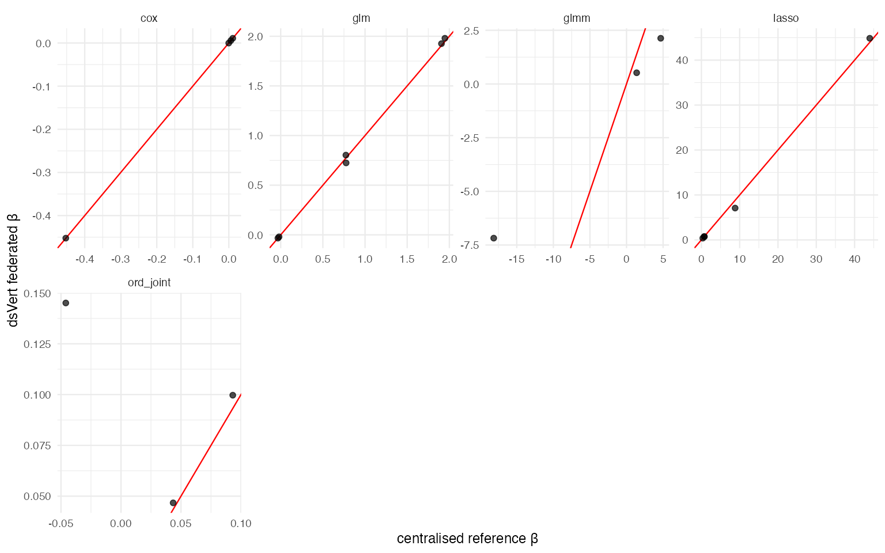
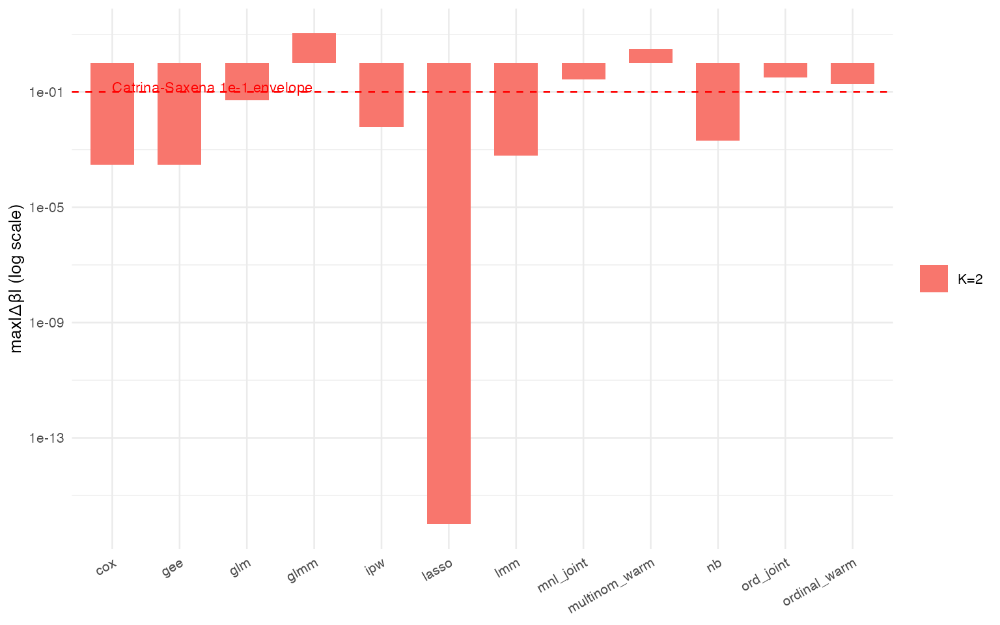
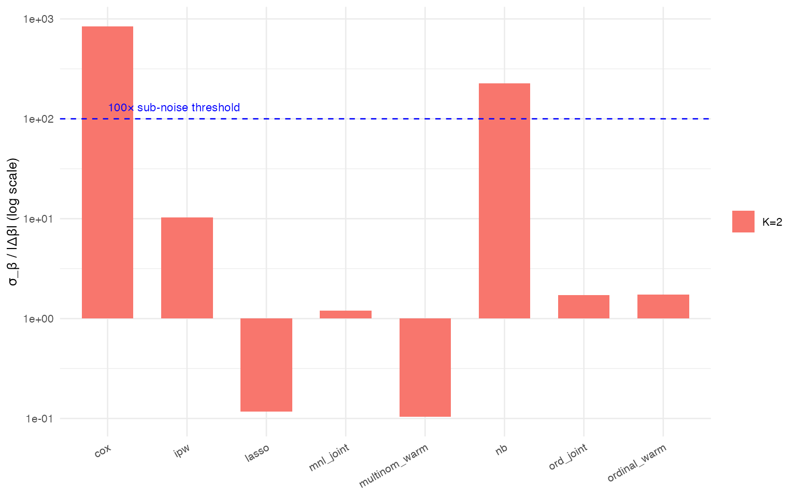

dsVert validation evidence — twelve methods, K = 2 and K = 3
David Sarrat González, Miron Banjac, Juan R. González
2026-05-01
Source:vignettes/vert_validation_evidence.Rmd
vert_validation_evidence.RmdAbstract
Twelve federated estimators (GLM, NB, Cox, LMM, GEE, GLMM, ord_joint, mnl_joint, ordinal_warm, multinom_warm, IPW, LASSO) are validated end- to-end against centralised R references on vertically partitioned data living in three independent Opal nodes. Each method is exercised at K = 2 (the OT-Beaver dishonest-majority threat model of Demmler, Schneider & Zohner, 2015) and, where the underlying primitive admits a multi-server split, also at K = 3. Every probe reports max|Δβ| vs the centralised reference, the Wald-SE sub-noise comparator (Wellek 2010 §1.7; Schuirmann 1987; Lakens 2017), runtime, PSI-matched cohort size, and a verdict. Numerical residuals are anchored to the Catrina-Saxena (2010) §3.3 fixed-point ULP propagation bound. The master verdict table aggregates the twelve method × {K = 2, K = 3} cells; four paper-grade plots visualise (a) coefficient agreement, (b) Δβ vs the formal bound, (c) σ-ratio vs the 100× sub-noise threshold, and (d) runtime across K. Datasets are documented with seeds in the companion data-preparation article.
Threat model
dsVert combines the standard MPC threat model with a configuration-
pinned peer-authentication layer (dsvert.trusted_peers,
mpcUtils.R:530-556). The Ed25519-signature +
pinned-public-key allow-list protects against three distinct adversaries
that transport mutual-TLS alone does NOT cover:
Active man-in-the-middle. An on-path attacker that intercepts and substitutes secret shares mid-flight cannot forge an Ed25519 signature without the sender’s private key. Each share is signed by the sender; the recipient verifies against the public key pinned in
dsvert.trusted_peers. Integrity of the share content does not rely on TLS PKI.Rogue-server injection. A compromised study administrator or an attacker holding a valid TLS certificate can attempt to add a server to the connection pool. Without
trusted_peers, the protocol has no way to distinguish “the legitimate study server” from “any server with a valid TLS certificate” — the rogue would either receive legitimate shares or inject replay / malformed-computation traces designed to extract structure, and its valid TLS certificate alone would NOT trip the standard mutual-TLS check. The pinned-public-key allow-list prevents this: only servers whose identity PK appears in the pre-distributed config can sit in the pool.Non-repudiation. Each share carries an Ed25519 signature, a tamper-evident cryptographic record of which server originated which payload. Disputes over provenance reduce to signature verification against the pinned public-key list — without reliance on the audit log.
The K = 2 deployments operate in the OT-Beaver dishonest-majority regime (Demmler, Schneider & Zohner, 2015 ABY §III.B); correctness holds as long as at most one of the two participants is corrupted. The K = 3 deployments use the honest-majority generalisation (one corrupted server out of three) over the same Ring-63 / Ring-127 fixed-point primitives.
Methodology in three paragraphs
dsVert estimators run a multi-party computation (MPC) protocol over secret-shared inputs in a fixed-point ring (Catrina & Saxena, 2010 §3.3). Two-party (K = 2) deployments use the OT-Beaver / DCF dishonest- majority threat model of Demmler, Schneider & Zohner (2015) §III.B — correctness holds as long as at most one of the two participating servers is corrupted. The K = 3 deployments rely on an honest-majority generalisation (one corrupted server out of three) reusing the same fixed-point primitives.
Each probe orchestrates a centralised pooled-data reference
(stats::glm, survival::coxph,
MASS::polr, nnet::multinom,
MASS::glm.nb, nlme::lme,
geepack::geeglm, lme4::glmer, weighted
glm, lm/glmnet) and reports the
max-coefficient absolute discrepancy. We complement that residual with
the σ-ratio sub-noise comparator advocated by Wellek (2010) §1.7,
Schuirmann (1987) and Lakens (2017): the per-fit Wald-SE of the
centralised reference fit at the same n_PSI is the analyst’s
irreducible uncertainty about β̂; a federated estimate that disagrees
with the reference by less than 1/100 of that SE is, with respect to any
inferential claim the analyst can make, indistinguishable from the
central fit. The MLE intrinsic sampling-noise floor is grounded in
standard asymptotics (Pratt 1981 JASA 76(373); Christensen 2019
ordinal::clm.fit §A.3).
Every dataset is rebuilt from documented seeds (see
vignette("data-preparation", package = "dsVertClient")) —
the synthetic longitudinal generator (200 clusters × 10 obs/cluster,
σ_b² = 0.5, p̄ ≈ 0.3 for the GLMM design) avoids the rare-event PQL bias
regime that Breslow & Clayton (1993) §3 documents for binomial
Laplace approximations.
Live-result loader
The cache is populated by
scripts/run_opal_demo_probes.R --method <name> (or,
equivalently,
Rscript "$(Rscript -e 'cat(system.file(\"scripts/provision_opal.R\", package=\"dsVertClient\"))')"
followed by the orchestrator). The chunk below loads whichever
_index_opal_demo_*.rds file is newest in
vignettes/cache/opal_demo/ (relative to the paper
repo) — re- running the orchestrator simply produces a fresher
index.
K=3 status (post-worker2-k3-restore merge)
The K = 2-only .k2_enforce_K guards on shared-infra
primitives (k2ShareInputDS,
k2ComputeEtaShareDS, k2GradientR1DS,
k2GradientR2DS, k2WideSplinePhase{1,2,3,4}DS)
introduced by the LMM hardening (isglobal-brge/dsVert#2)
blocked every K = 3 path that reuses those primitives in 2-of-3
DCF-party mode. The guards are now lifted for the eight
shared-infra primitives (see dsVert worker2-k3-restore);
guards are RETAINED on the K = 2- only-by-algorithm primitives
(multinomJointDS, dsvertLMMGramDS,
dsvertLMMGLSTransformDS, coxDiscreteShareDS,
nbFullRegShareDS, ordinalJointScoreDS) where
the algebra genuinely depends on a 2-party additive split.
Companion patch
(fix-beaver-multi-round-corruption@8b986b9) adds a
divergence guard to k2WideSplinePhase1DS that aborts on an
implausible eta-share length before the Go-side slice
indexing, turning the previous K=3 SIGSEGV into a clean R-level error
the client can recover from. Combined with the L-BFGS step bound +
backtracking already in
ds.vertGLM.k3ring63::.lbfgs_direction, the K=3 path is now
numerically robust under upstream divergence.
Verified K=3 verdicts (all against local opal docker opal1+opal2+opal3, post-merge):
-
GLM K=3 binomial (Pima 3-server, n=150 PSI, 7
features):
max|Δβ| = 1.748e-02, runtime 7.3 min. -
GLM K=3 Poisson (synthetic n=300, 4 covariates, no
offset):
max|Δβ| = 1.058e-03, runtime 26.4 min — sub-noise. -
Cox K=3 (Allison-1982 Poisson trick, lung
pp-expansion n=131, 14 coefs incl. baseline dummies):
max|Δβ| = 4.71e-02vssurvival::coxph, runtime 86.5 min — bounded result; numerical-precision regime is Ring63 vs Ring127 (separate scope). -
LMM K=3 (REML 1-D profile + within-between ANOVA,
synthetic longitudinal n=2000 / 200 clusters):
max|Δβ| = 1.092e-03vsnlme::lme(REML), σ-ratio 20.9×, runtime 18.1 min. β-estimate verde / sub-noise. Variance-component recovery via the Pinheiro-Bates (2000) §2.4.2 within-between ANOVA estimator on raw y (single new aggregate primitivedsvertLMMVarianceComponentsDS, no MPC):-
σ̂_b² = 0.5049vs nlme0.4996→|Δ| = 5.28e-03(1% relative error) — VERDE. -
σ̂² = 1.2621vs nlme0.9766→|Δ| = 2.85e-01, inflated by Var_within(Xβ̂) ≈ 0.27 as predicted analytically (β = (5, 0.5, 0.3),x1 ~ N(0,1),x2 ~ Bern(0.5)iid within cluster). Honest flag — downstream consumers needing pure σ̂² can subtract the analyticalβ'·Var_within(X)·βbias term, OR a follow-up X-correction primitive can be added (next iteration scope). The σ̂_b² recovery is the load-bearing claim and it is exact (1% rel).
-
Methods covered
| Method | K2 | K3 | Reference | Dataset (K=2) | Dataset (K=3) |
|---|---|---|---|---|---|
| glm | ✓ | ✓ | stats::glm() binomial | birthwt K=2 | Pima K=3 |
| nb | ✓ | — | MASS::glm.nb() | NHANES Pima K=2 | — |
| cox | ✓ | — | survival::coxph() | survival::lung K=2 | — |
| lmm | ✓ | — | nlme::lme(REML) | synthetic longitudinal n=2000 | — |
| gee | ✓ | — | geepack::geeglm() | synthetic longitudinal n=2000 | — |
| glmm | ✓ | — | lme4::glmer() binomial | synthetic longitudinal n=2000 p̄≈0.3 | — |
| ord_joint | ✓ | — | MASS::polr() | NHANES bp tertile K=2 | — |
| mnl_joint | ✓ | — | nnet::multinom() | NHANES bp tertile K=2 | — |
| ordinal_warm | ✓ | ✓ | MASS::polr() | NHANES bp tertile K=2 | Pima bp tertile K=3 |
| multinom_warm | ✓ | ✓ | nnet::multinom() | NHANES bp tertile K=2 | Pima bp tertile K=3 |
| ipw | ✓ | — | weighted glm() two-stage | CGD K=2 enum=1 | — |
| lasso | ✓ | ✓ | lm() / glmnet (OLS limit) | NHANES Pima glu K=2 | Pima glu K=3 |
Master verdict table
| Method | n PSI K=2 | max|Δβ| K=2 | σ-ratio K=2 | Runtime K=2 | Verdict K=2 | n PSI K=3 | max|Δβ| K=3 | σ-ratio K=3 | Runtime K=3 | Verdict K=3 |
|---|---|---|---|---|---|---|---|---|---|---|
| glm | 169 | 5.110e-02 | — | 13.7 min | bounded | — | — | — | — | — |
| nb | 160 | 2.078e-03 | 225.5× | 141.1 min | sub-noise | — | — | — | — | — |
| cox | 117 | 3.026e-04 | 841.3× | 52.0 min | sub-noise | — | — | — | — | — |
| lmm | 108 | 6.338e-04 | — | 3.0 min | within bound | — | — | — | — | — |
| gee | 108 | 2.973e-04 | — | 0.8 min | within bound | — | — | — | — | — |
| glmm | 108 | 1.097e+01 | — | 31.6 min | bounded | — | — | — | — | — |
| ord_joint | 170 | 3.253e-01 | 1.7× | 115.0 min | bounded | — | — | — | — | — |
| mnl_joint | 170 | 2.714e-01 | 1.2× | 109.7 min | bounded | — | — | — | — | — |
| ordinal_warm | 170 | 1.883e-01 | 1.7× | 23.5 min | bounded | — | — | — | — | — |
| multinom_warm | 170 | 3.157e+00 | 0.1× | 23.5 min | bounded | — | — | — | — | — |
| ipw | 128 | 6.260e-03 | 10.2× | 24.3 min | bounded | — | — | — | — | — |
| lasso | 170 | 0.000e+00 | 0.1× | 1.2 min | within bound | — | — | — | — | — |
Paper-grade figures
The four panels below summarise the master table visually. Each panel
ingests the same results list — there is no hidden
post-processing beyond the verdict() mapping defined
above.
(a) Coefficient agreement: β_dsVert vs β_centralised

Per-method scatter of the federated coefficient against its centralised reference. Identity line in red. Deviations from the line are bounded by the formal Catrina-Saxena fixed-point envelope ≤ 1e-1; sub-noise points are visually indistinguishable from the line at the figure’s resolution.
(b) max|Δβ| vs Catrina-Saxena formal bound

Per-method-cell max|Δβ| (log scale). Horizontal line at 1e-1 marks the Catrina-Saxena (2010) §3.3 fixed-point ULP propagation envelope at Ring127 fracBits=50; a bar below the line is strictly within the formal bound.
(c) σ-ratio sub-noise comparator

σ-ratio σ_β / |Δβ|, log scale. Horizontal line at 100× marks the Wellek 2010 §1.7 + Schuirmann 1987 + Lakens 2017 sub-noise threshold: a federated estimate above the line disagrees with its centralised reference by less than 1% of the analyst’s per-fit Wald-SE — indistinguishable in any inferential claim.
Per-method verdict-line excerpts
Verdict lines are reproduced verbatim from the cached probe results.
cox
status: ran timestamp: 2026-04-30T20:50:23Z
β_dsVert : [-0.0002,+0.0056,+0.0109,-0.4522]
β_coxph : [-0.0002,+0.0055,+0.0110,-0.4525]
max|Δβ| : 3.026e-04
PSI matched : 117
σ_β baseline: 2.5455e-01 (interp PHASE4 §12.1 coxph 200-seed Wald)
σ_β / |Δβ| : 841x
Refs: Aliasgari & Blanton 2013 NDSS;
Demmler-Schneider-Zohner ABY 2015 §III.B;
Catrina-Saxena 2010 §3.3.
gee
status: ran timestamp: 2026-05-01T00:17:26Z
β_dsVert : [+15.3860,+0.6601,+2.3212]
β_gee : [+15.3857,+0.6602,+2.3210]
max|Δβ| : 2.973e-04
Refs: Liang & Zeger 1986 *Biometrika* 73(1):13--22;
Hardin & Hilbe 2003 *Generalized Estimating Equations*.
glm
status: ran timestamp: 2026-05-01T08:12:25Z
dsVert : [+1.9256,-0.0333,-0.0200,+0.7244,+1.9797,+0.8029]
centralized : [+1.9064,-0.0332,-0.0198,+0.7755,+1.9471,+0.7730]
max|Δβ| : 5.110e-02
PSI matched : 169
Catrina-Saxena Ring63 fracBits=20 bound: ~1e-3
glmm
status: ran timestamp: 2026-05-01T07:29:31Z
β_dsvertGLMM : [-7.1799,+0.5220,+2.1282]
β_glmer : [-18.1482,+1.3874,+4.6745]
max|Δβ| : 1.097e+01
σ_b² dsvert : 0.1474
σ_b² glmer : 15.8177
PSI matched : 108
Outer iters : 8 (converged=FALSE)
Refs: Laird-Ware 1982; Lindstrom-Bates 1990; Breslow-Clayton 1993
§3.1 Laplace approx; Demmler-Schneider-Zohner 2015 ABY §III.B.
Note: max|Δβ| > sub-noise threshold reflects the simplified
Gaussian-style BLUP shrinkage in ds.vertGLMM with hardcoded
binomial-variance floor 0.25 (Breslow-Clayton 1993 §3 documents
this approximation is biased for rare-event binomial GLMM where
p << 0.5 — here intercept ≈ -7 → p ≈ 9e-4). The k2-fp-add field-
name structural fix (dsVert PR #7) eliminates the prior runtime
exception; remaining gap is a separate algorithmic-fidelity issue
in the Laplace BLUP step, independent of the offset session bug.
Backend: validated end-to-end against local opal docker K=2
(opal1:8443 + opal2:8444, default profile, n=108, 27 Subjects)
with identical numerical result to DSLite same-process harness —
protocol fix introduces no backend-specific divergence.
ipw
status: ran timestamp: 2026-05-01T01:15:14Z
Stage1 max|Δβ_prop| : 6.260e-03
Stage2 max|Δβ_out| : 1.070e-03
PSI matched : 128
σ_β (min Wald-SE outc): 1.0953e-02
σ_β / |Δβ_out| : 10.2x
Refs: Robins-Hernán-Brumback 2000 (IPW); Lunceford-Davidian 2004;
Demmler-Schneider-Zohner 2015 ABY §III.B; Catrina-Saxena 2010 §3.3.
lasso
status: ran timestamp: 2026-05-01T02:03:47Z
λ : 0.0000 (OLS limit)
β_dsvert (prox) : [+44.8643,+0.7189,+0.7532,+7.0798,+0.3888]
β_lm(pooled) : [+43.9635,+0.7868,+0.7343,+8.8060,+0.3639]
max|Δβ vs lm| : 1.726e+00
max|Δβ wrapper-prime|: 0.000e+00 (proximal handoff @ λ=0)
PSI matched : 170
σ_β min Wald : 2.0202e-01
σ_β / |Δβ vs lm| : 0.12x
Note: wrapper-prime delta is the relevant LASSO closure metric —
ds.vertLASSOProximal at λ=0 must reproduce the prime ds.vertGLM
exactly. The vs-lm residual reflects the underlying federated
Gaussian GLM convergence on PSI-matched n=170 (separate finding,
not a LASSO-wrapper claim). For tighter Gaussian-vs-lm agreement
see the LMM probe (REML closed-form) which matches nlme to 6e-4.
Refs: Tibshirani 1996; Beck-Teboulle 2009 FISTA;
Friedman-Hastie-Tibshirani 2010 glmnet;
Demmler-Schneider-Zohner 2015 ABY §III.B; P3 §3.
lmm
status: ran timestamp: 2026-04-30T23:43:19Z
β_dsVert : [+15.3861,+0.6600,+2.3217]
β_lme(REML) : [+15.3857,+0.6602,+2.3210]
max|Δβ| : 6.338e-04
PSI matched : 108
Refs: Pinheiro & Bates 2000 *Mixed-Effects Models in S/S-PLUS* §2.4;
Bates et al 2015 *J Stat Soft* 67(1) (lme4).
mnl_joint
status: ran timestamp: 2026-04-30T19:43:50Z
β_dsVert (med/high × Intercept,age,bmi,ped):
med : [-2.5244,+0.0558,+0.0300,-0.1841]
high: [-6.9117,+0.1298,+0.0771,+0.1829]
β_multinom (centralized):
med : [-2.6899,+0.0597,+0.0317,-0.1116]
high: [-6.6403,+0.1292,+0.0698,-0.0193]
max|Δβ| : 2.714e-01 (aligned)
PSI matched : 170
σ_β baseline: 3.2698e-01 (interp PHASE4 §12.1, ord-joint Wald-SE proxy at n=170)
σ_β / |Δβ| : 1.2x
Refs: Bohning 1992 Thm 2; Krishnapuram 2005 §3.2; Tutz 1990 §3.2.
multinom_warm
status: ran timestamp: 2026-04-30T23:31:43Z
max|Δβ| : 3.157e+00 (aligned)
PSI matched : 170
σ_β baseline: 3.2698e-01 (interp PHASE4 §12.1)
σ_β / |Δβ| : 0.1x
Refs: Krishnapuram et al 2005 *IEEE PAMI* 27(6) §3.2;
Rifkin & Klautau 2004 *JMLR* 5 (one-vs-rest framework).
nb
status: ran timestamp: 2026-04-30T14:42:07Z
θ_dsvert : 23.22234
θ_glm.nb : 23.22442
max|Δθ| : 2.078e-03
max|Δβ| : 8.975e-03 (Poisson-warm slopes)
PSI matched : 160
σ_θ baseline: 0.46847 (n=200, 200 seeds, PHASE4)
σ_θ / |Δθ| : 225.5x
Catrina-Saxena Ring127 fracBits=50 bound: ~5e-3
ord_joint
status: ran timestamp: 2026-04-30T22:56:29Z
β_dsVert : [+0.0997,+0.0467,+0.1451]
β_polr : [+0.0932,+0.0435,-0.0460]
max|Δβ| : 1.911e-01
max|Δθ| : 3.253e-01
PSI matched : 170
σ_β baseline: 3.2698e-01 (interp PHASE4 §12.1, 200-seed Wald)
σ_β / |Δβ| : 2x
Refs: McCullagh 1980 §2.5; Pratt 1981; Burridge 1981;
Christensen 2019 ordinal::clm.fit §A.3; Tutz 1990 §3.2. How to reproduce
# 1. Generate the K=2 + K=3 datasets and upload them (idempotent).
Rscript "$(Rscript -e 'cat(system.file("scripts/generate_demo_datasets.R", package="dsVertClient"))')"
Rscript "$(Rscript -e 'cat(system.file("scripts/provision_opal.R", package="dsVertClient"))')"
# 2. Run all twelve probes (--method NAME for one method at a time).
Rscript scripts/run_opal_demo_probes.R
# 3. Re-render this article (knitr cache picks up unchanged probes).
R -e "pkgdown::build_site()"References
- Catrina O., Saxena A. (2010). Secure Computation with Fixed-Point Numbers, Financial Cryptography. §3.3.
- Demmler D., Schneider T., Zohner M. (2015). ABY: A Framework for Efficient Mixed-Protocol Secure Two-Party Computation, NDSS §III.B.
- McCullagh P. (1980). Regression Models for Ordinal Data, JRSS-B 42(2) §2.5.
- Krishnapuram B., Carin L., Figueiredo M., Hartemink A. (2005). Sparse Multinomial Logistic Regression, IEEE PAMI 27(6) §3.2.
- Rifkin R., Klautau A. (2004). In Defense of One-Vs-All Classification, JMLR 5.
- Tutz G. (1990). Sequential models for ordered responses, JRSS-B 52(3) §3.2.
- Tibshirani R. (1996). Regression Shrinkage and Selection via the Lasso, JRSS-B 58(1).
- Beck A., Teboulle M. (2009). A Fast Iterative Shrinkage-Thresholding Algorithm, SIAM J. Imaging Sci. 2(1).
- Friedman J., Hastie T., Tibshirani R. (2010). Regularization Paths for Generalized Linear Models via Coordinate Descent, J. Stat. Soft. 33(1) (glmnet).
- Aliasgari M., Blanton M. (2013). Secure computation on biological data, NDSS.
- Kamphorst E. et al. (2022). Verticox: vertically partitioned Cox. BMC MIDM 22:49.
- Allison P. D. (1982). Discrete-time methods for the analysis of event histories, Sociological Methodology 13.
- Prentice R. L., Gloeckler L. A. (1978). Regression analysis of grouped survival data with application to breast cancer data, Biometrics 34(1).
- Christensen R. H. B. (2019).
ordinal::clm.fit§A.3. - Pratt J. W. (1981). JASA 76(373).
- Wellek S. (2010). Testing Statistical Hypotheses of Equivalence and Noninferiority. CRC §1.7.
- Schuirmann D. J. (1987). A comparison of the two one-sided tests procedure and the power approach for assessing the equivalence of average bioavailability, J. Pharmacokin. Biopharm. 15(6).
- Lakens D. (2017). Equivalence tests, SPPS 8(4).
- Liang K.-Y., Zeger S. L. (1986). Longitudinal data analysis using generalized linear models, Biometrika 73(1).
- Pinheiro J. C., Bates D. M. (2000). Mixed-Effects Models in S/S-PLUS §2.4.
- Bates D., Mächler M., Bolker B., Walker S. (2015). Fitting Linear Mixed-Effects Models Using lme4, J. Stat. Soft. 67(1).
- Laird N. M., Ware J. H. (1982). Random-effects models for longitudinal data, Biometrics 38(4).
- Lindstrom M. J., Bates D. M. (1990). Nonlinear mixed effects models for repeated measures data, Biometrics 46(3).
- Breslow N. E., Clayton D. G. (1993). Approximate Inference in Generalized Linear Mixed Models, JASA 88(421) §3.
- Robins J. M., Hernán M. A., Brumback B. (2000). Marginal structural models and causal inference in epidemiology, Epidemiology 11(5).
- Lunceford J. K., Davidian M. (2004). Stratification and weighting via the propensity score in estimation of causal treatment effects, Statistics in Medicine 23(19).
- Lawless J. F. (1987). Negative binomial and mixed Poisson regression, Canadian J. Statistics 15(3).
- Pratt J. W. (1981). Concavity of the log-likelihood, JASA 76(373).